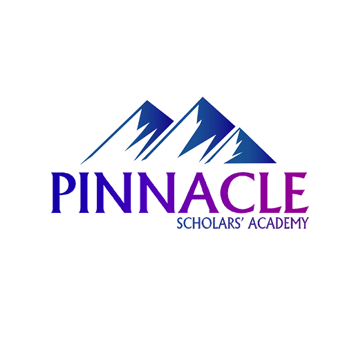

EDUCATION

Grade UKG - 10
I studied at Pinnacle Scholars' Academy school from the grades of UKG to 10.It was an amazing experience as I got a chance to meet many people throughout my past days.In DLE exam of grade 8 I scored a GPA of 3.65 and in the SEE exam I scored a GPA of 3.55.

Grade 11/12
Trinity International ss & college was the college I attended for my +2 in Science background.As an optional subject I studied computer science for 1 year.I scored a GPA of 3.20 in the grade 11 final exam a GPA of 3.08 in the final exam of grade 12.I scored an aggregrade of 3.14
Bachelors
Herald College Kathmandu (HCK) is the college in which I chose to pursue my bachelor in the field of BIT.I hope to learn more and have a good experience here.